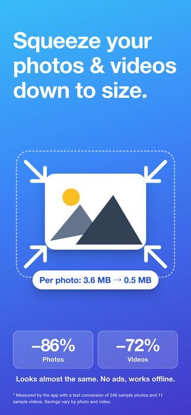
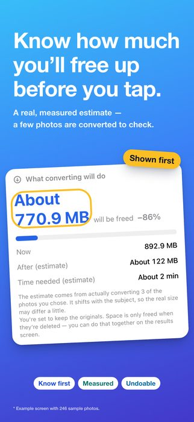
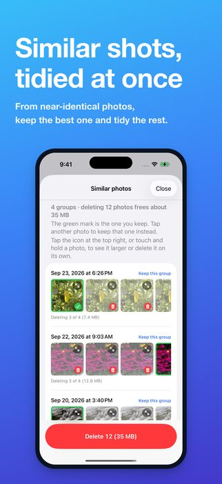
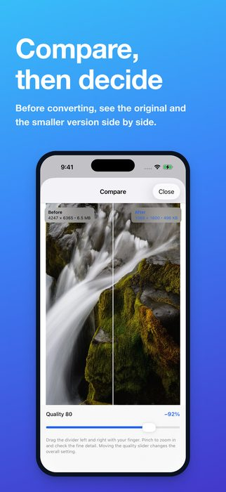
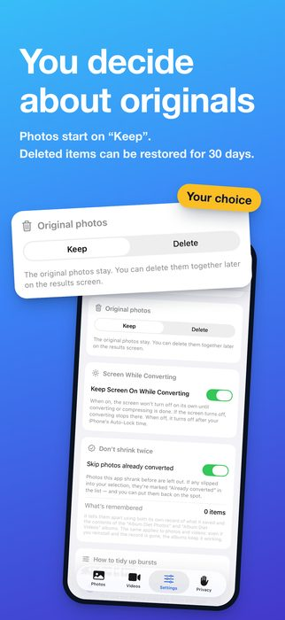
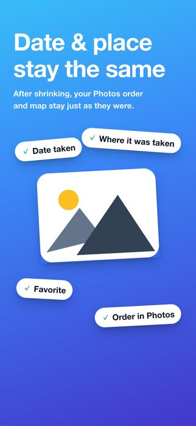
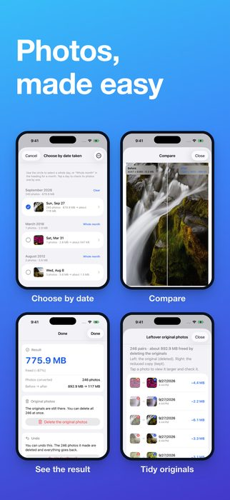
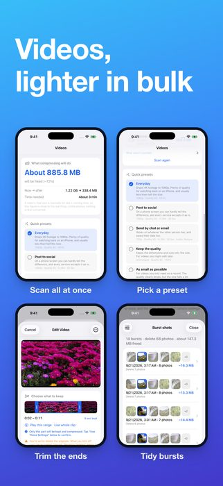

Shrink your photos and videos in bulk and get your iPhone's free space back (iOS 17 or later)
Download on the App Store (free)








Usually the only way to free up space is to delete things. This app makes new, smaller versions of your photos and videos, so they take up less space while looking almost exactly the same. It's not unusual for a single video shot in 4K to take up as much space as a hundred photos.
Tap “Scan” and it picks out only what will actually get smaller under your current settings, then tells you up front: “About 3.2 GB will be freed.” Photos that are already small, videos that won't shrink any further, and anything you've already made smaller are left out of the count from the start.
That way you don't give up quality for nothing, only to find that less space was freed than you expected.
A burst — the set of shots you take by holding down the shutter — looks like a single photo in the Photos app. So you never notice how many shots you actually took. Twenty bursts of twenty shots each add up to hundreds of photos on their own.
Keep one and delete the rest, and the space used goes down with no change in quality. By default, the shot that's kept is the one iPhone itself recommends (you can also choose the first or the last), and you can look through the bursts one at a time and choose a different one. Favorites and edited photos are protected and never deleted.
Besides shrinking, there are tools for clearing out what you don't need, under “More ways to tidy up” on the Photos tab. None of them touch the quality of what you keep. Each row shows roughly how much space tidying up would free.
On the screens where you choose and tidy up, you can also view items full screen and delete what you don't need on the spot. Deleted items stay in “Recently Deleted” in the Photos app for 30 days.
Without Pro, tidying up in bulk covers 10 items a day. Deleting items one at a time is always free.
It depends on your settings. By default, photos are set to “Keep” and videos to “Delete.” Videos default to deleting because if the originals stay, not a single byte of space is freed — in fact, the total goes up. You're always asked before anything is deleted, and you can change this in Settings.
Deleted items stay in “Recently Deleted” in the Photos app for 30 days, so you can restore them from there. Photo conversions can also be undone from inside the app.
No, they're kept. They're carried over as they are, so the order in the Photos app and the map stay intact. If you want to remove them before giving photos to someone, you can choose what to remove on the “Personal data” screen.
No. Neither photos nor videos ever leave your iPhone: everything is processed only on the device, and there is no server. Only buying Pro, and checking whether you have it, goes through Apple's App Store.
Yes. If “Optimize iPhone Storage” is turned on, the originals are downloaded before they are processed, so a large number of items takes time and uses data.
Every day, you can shrink up to 20 photos and 1 video, and tidy up to 10 items in bulk (similar photos, screenshots, Live Photos and bursts). Scanning, estimates, choosing, deleting one at a time, undo and removing personal data stay free forever.
Album Diet Pro, which lets you shrink and tidy up as many as you like at once, is a one-time purchase you keep forever — not a subscription. Family Sharing is supported. If you installed the app by version 1.3, you keep everything as before, with no purchase needed.
Japanese, English, Simplified Chinese, Traditional Chinese, Korean, German, French, Spanish, Portuguese (Brazil) and Italian — 10 languages in all. It switches to match your iPhone's language setting.
For freeing up iPhone storage in general, not just with this app, a guide covers what to clear first and where people tend to get stuck: What to clear first when your iPhone storage is full (in Japanese).
Neither photos nor videos ever leave your iPhone. Everything happens on the device; only the Pro purchase goes through the App Store. No information is collected, and there is no account to create. See the privacy policy for details.
Questions and requests are welcome at tatlink002@gmail.com.